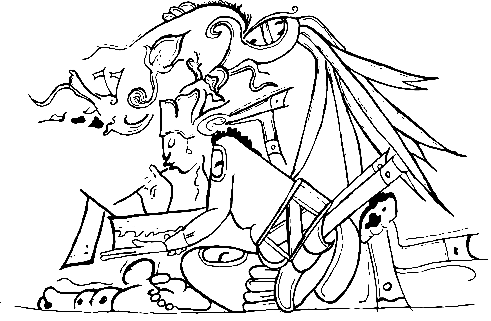
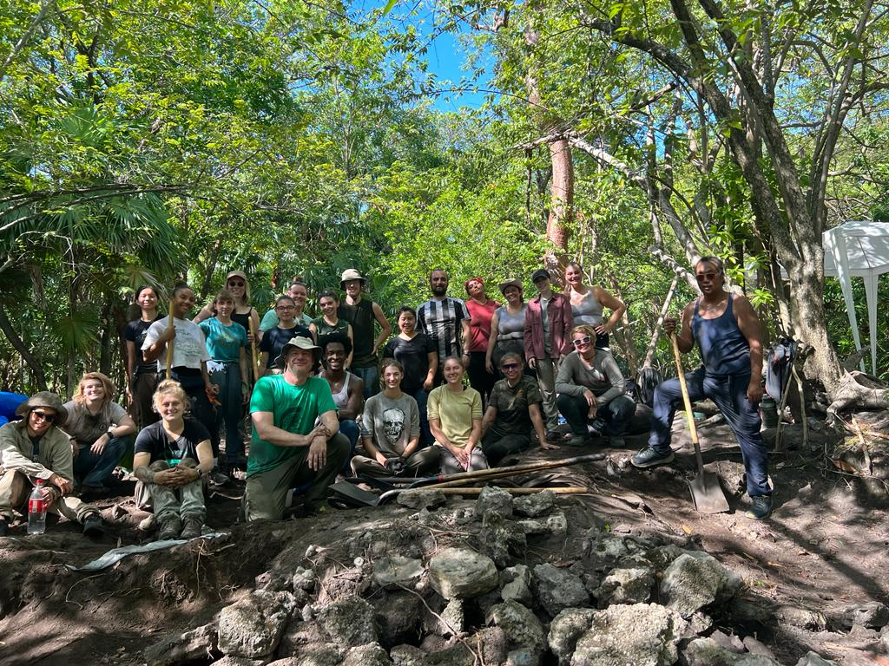

Whether you are visiting the site of Marco Gonzalez for the first time or the hundredth, welcome!
Aubs - add more information!>
For context, Marco Gonzalez is a Maya site that was first excavated in 1986. This initial excavation preluded several additional years of research. The excavations conducted during these seasons have found that the site was occupied as early as the Late Preclassic period and extended to the Middle Postclassic period. The table below shows the dates associated with Marco Gonzalez.
One time period that may have caught your attention in the table is during the Terminal Classic, which coincides with an event known as the "Maya Collapse." However, this name is a little bit of a misnomer - while some sites were abandoned, the Maya civilization did not "collapse." Rather, this was a period of social and environmental change, with population movement and a decentralization of political and economic power.
Marco Gonzalez served as the island’s largest trade port, providing an economic foundation that may have been the key to its long-term sustainability. Previous research has indicated that the site not only survived, but also thrived during the Terminal Classic and Early Postclassic. The role of Marco Gonzalez as a major trading hub placed them in direct contact with several communities along the coast, rivers, and islands throughout the Caribbean. Access to these waterways would have allowed the community to access food and trade goods.
This website, "Trade Routes to Ambergris Caye" is a digital cultural heritage mobile website created to engage tourists and local communitites with ongoing research at Marco Gonzalez. This website will be updated after each field season, as well as when research from Marco Gonzalez is published!
What is the Marco Gonzalez Archaeological Project?
After a several year hiatus, excavations at Marco Gonzalez resumed the summer of 2023. The first undergraduate archaeological field school was held this same summer, as a part of the Marco Gonzalez Archaeological Project (MGAP).
The field school consisted of undergraduate students from Michigan State University, University of Michigan-Flint, University of Belize, and Galen University (in Belize).
One of the interesting finds that we had in 2023 was Burial 14/40. This burial was of an individual who was positioned ... and had grave goods of ...
The 2023 MGAP field school scribe logo design
And that's how we got the above logo of a scribe!
Aubs - add more information!>
MGAP will be continuing each year for the foreseeable future. Come back to keep up with our findings!
The 2023 MGAP field school group photo
How to Navigate This Site
There are 5 pages that you can explore to learn more about Marco Gonzalez and it's place within broader Mesoamerica. Those tabs are:
The first tab on the navigation bar, titled "Introduction", will take you back to this page.
The second tab on the navigation bar, titled "Mesoamerica Map", will take you to a Leaflet map that encompasses the Mesoamerican region (Mexico, Belize, Guatemala, El Salvador, and Honduras). Pins on the map will indicate locations that are connected to Marco Gonzalez, as discovered through artifact analysis.
The third tab on the navigation bar, titled "Marco Gonzalez Map", will take you to a georeferenced map that show the archaeological map of Marco Gonzalez structures; this will allow visitors to identify the structures while on site. Pins on the map will indicate where particular artifacts were found - more specifically, the artifacts that traveled to Marco Gonzalez.
The fourth tab on the navigation bar, titled "Contact", will take you to a contact page where you can contact Aubree S. Marshall, the creator of this project.
{kind=link}
{kind=link}
{kind=link}
{kind=link}